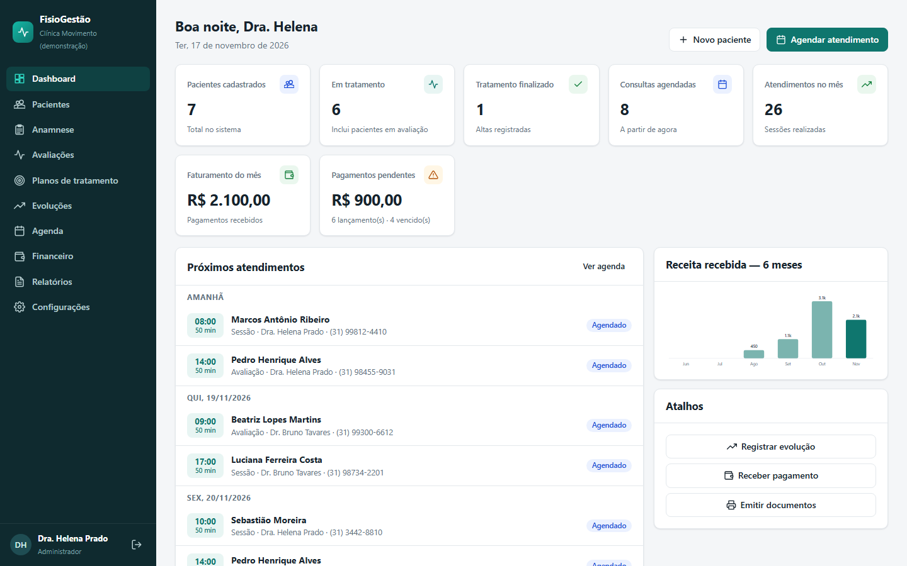
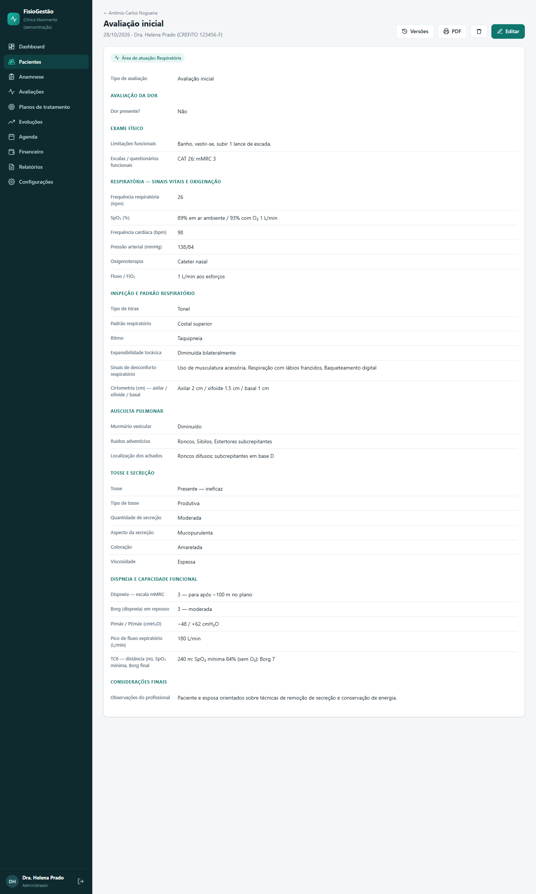
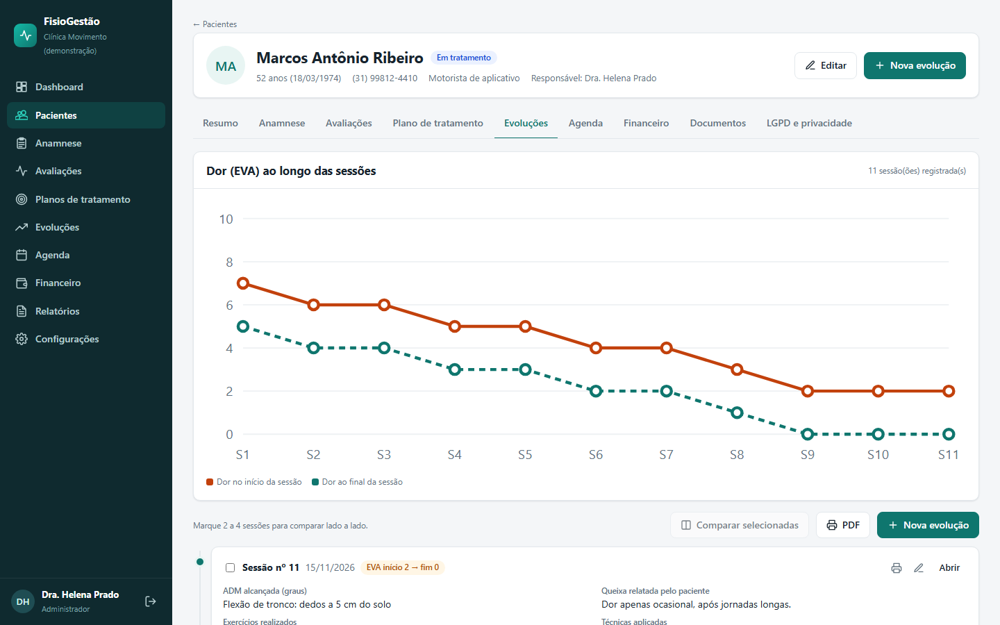
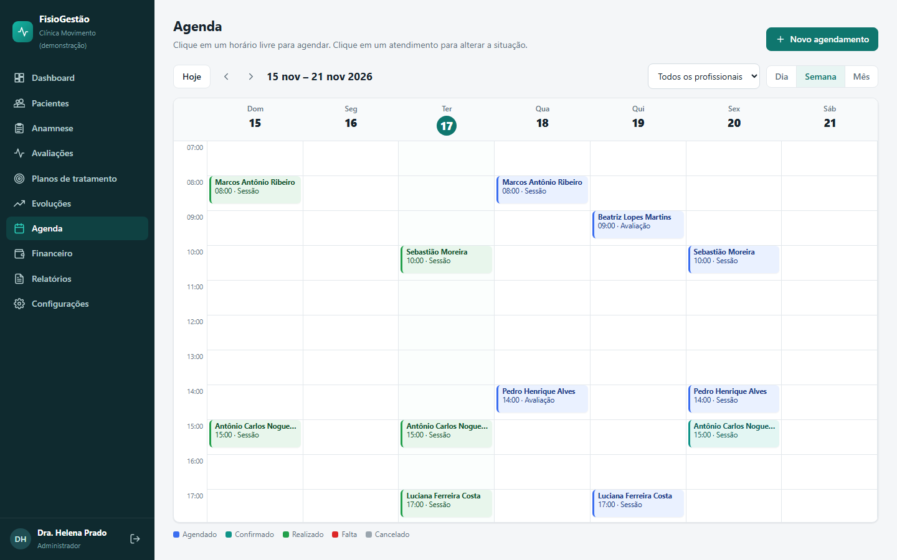
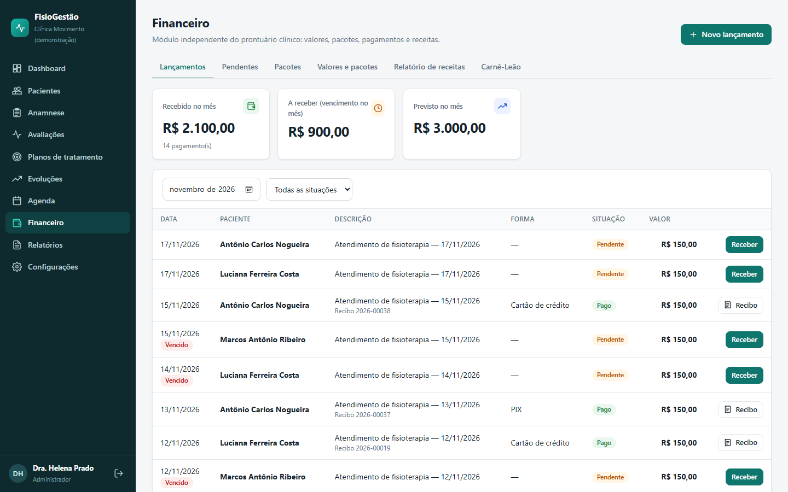
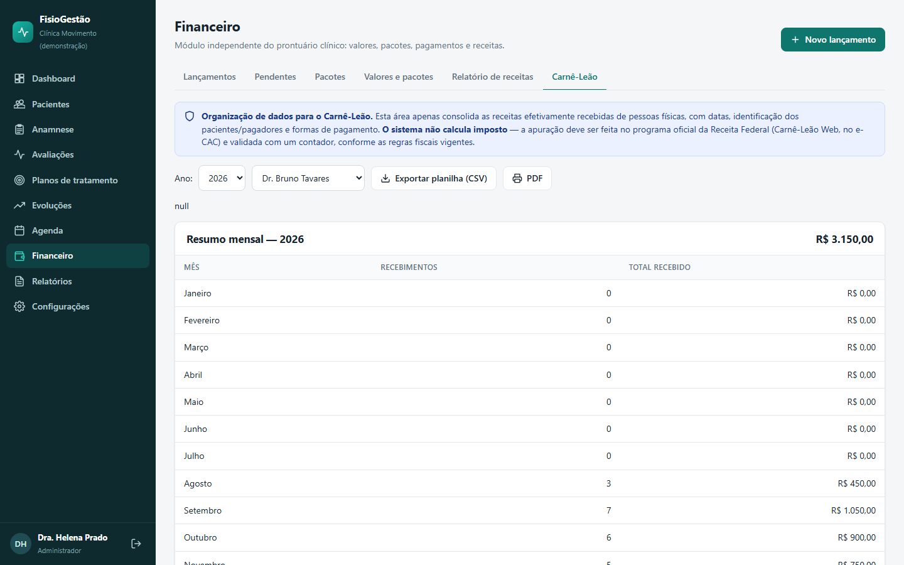
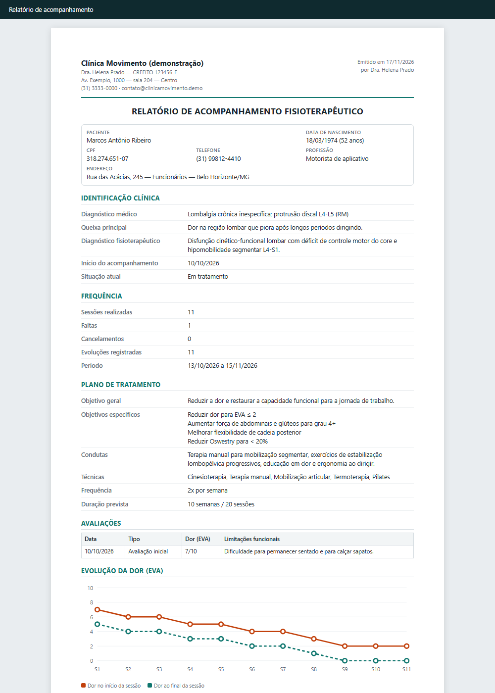
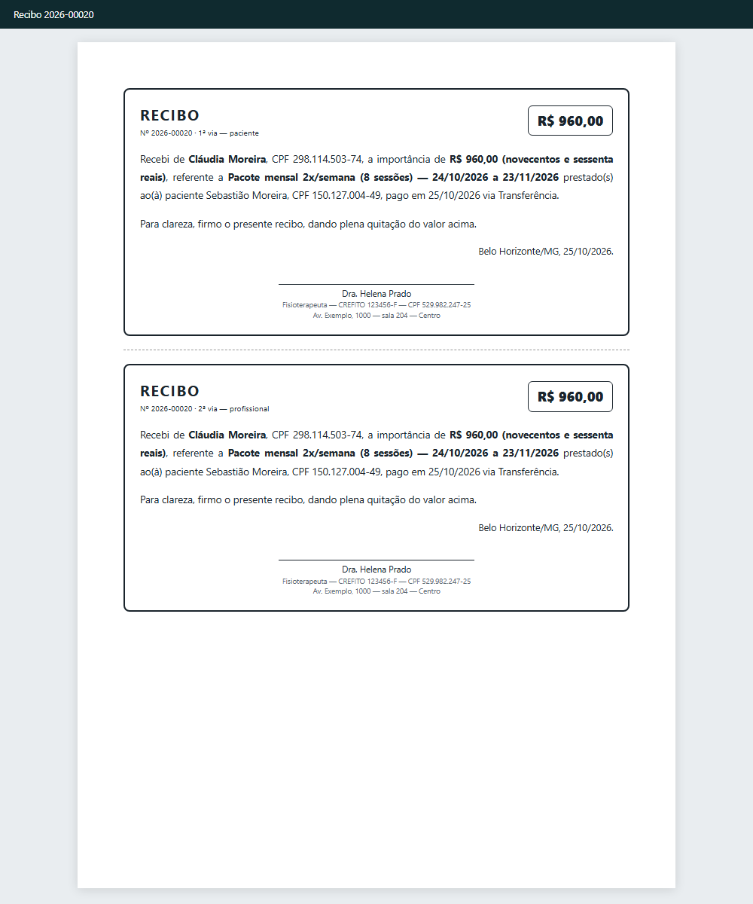
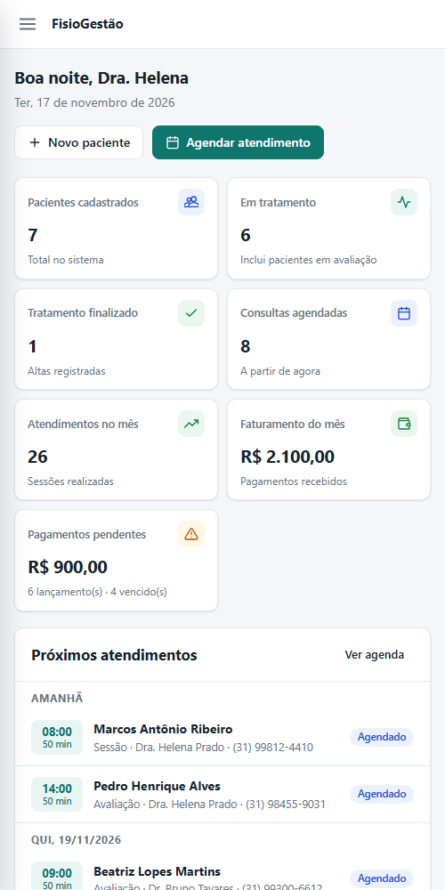
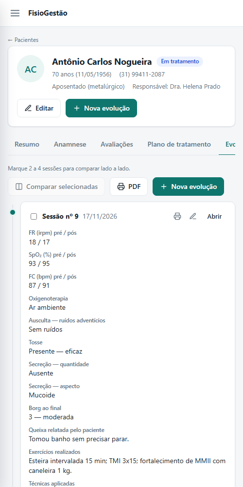

Prontuário eletrônico, agenda e financeiro para fisioterapeutas autônomos e clínicas.

Avaliações e evoluções em pastas, difíceis de comparar entre sessões.
Faltas e remarcações sem registro, horários conflitando.
Quem pagou, quem deve, recibos e Carnê-Leão montados à mão.
Dados de saúde são sensíveis e exigem consentimento, acesso restrito e registro.
Dados pessoais, contato de emergência e consentimento LGPD.
Diagnóstico médico, queixa, HDA, histórico, medicamentos e hábitos.
Ficha geral + ficha específica da área de atuação.
Objetivos, condutas, técnicas, frequência e critérios de reavaliação.
Registro de cada sessão, gráfico de dor e comparação entre sessões.
Cobrança automática, pagamento, recibo e Carnê-Leão.
Tudo fica no prontuário do paciente, com data, autor e histórico de cada alteração.
A agenda gera a cobrança quando o atendimento é marcado como realizado, e os documentos saem prontos em PDF a partir dos registros.
O profissional escolhe a área na avaliação e a ficha específica é acrescentada aos campos gerais. As evoluções seguintes do paciente já abrem com os campos da mesma área.
Paciente com DPOC: a avaliação registra ausculta, tosse e as características da secreção, e cada sessão acompanha a mudança.




Valores e pacotes mensais, pagamentos por PIX, dinheiro, cartão ou transferência, pendências e relatório de receitas.

Carnê-Leão organizado: receitas por mês, paciente, pagador e CPF, exportáveis em planilha. O sistema não calcula imposto.
Identificação do profissional e do paciente, data e espaço para assinatura em todos.


Senha protegida, bloqueio após tentativas erradas e sessão que expira.
Anamneses, avaliações, planos e evoluções ficam cifrados no banco.
Quem acessou, alterou ou excluiu, e quando. Versões anteriores preservadas.
Termo imprimível, registro, revogação e exportação dos dados do paciente.
A mesma tela se adapta ao celular e ao tablet, com menu lateral recolhível. Útil no atendimento domiciliar e no hospital.


Sete pacientes de exemplo, entre eles casos ortopédico, esportivo, neurológico e respiratório. Os dados ficam salvos apenas no seu navegador.
admin@demo.fisioAcesso a todas as áreasfisio@demo.fisioSomente os próprios pacientesrecepcao@demo.fisioSem acesso a dados clínicosSenha dos três perfis: demo1234 · ou clique no perfil na tela de entrada. Não insira dados reais de pacientes na demonstração.